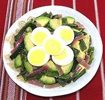

|
Mexican SaladMexico, Yucatán - Ensalada Mexicana | ||||
| Makes: Effort: Sched: DoAhead: |
1-1/2# ** 45 min Most |
This is a Yucatán version of a salad popular all over Mexico, a country not noted for salads (Caesar Salad was invented by Italians, for Americans, not Mexicans or for Mexicans). | |||
|
10 5 1 1-1/4 2-1/2 1/2 ------ 2 |
oz oz T # T t --- |
Chili Poblano (1) Onion, red Olive Oil, ExtV Avocados Vinegar (2) Salt -- Garnish Eggs, Hard Boiled |
Do Ahead - (20 min - 5 min work)
|